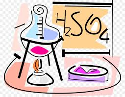

CHEMISTRY [Part-1]
Chapter 1: The Solid State
Chapter 2: Solutions
Chapter 3: Electrochemistry
Chapter 4: Chemical Kinetics
Chapter 5: Surface Chemistry
Chapter 6: General Principles and Processes of Isolation of Elements
Chapter 7: The p Block Elements
Chapter 8: The d and f Block Elements
Chapter 9: Coordination Compounds
CHEMISTRY [Part-2]
Chapter 10: Haloalkanes and Haloarenes
Chapter 11: Alcohols, Phenols and Ethers
Chapter 12: Aldehydes, Ketones and Carboxylic Acids
Chapter 13: Amines
Chapter 14: Biomolecules
Chapter 15: Polymers
Chapter 16: Chemistry in Everyday Life